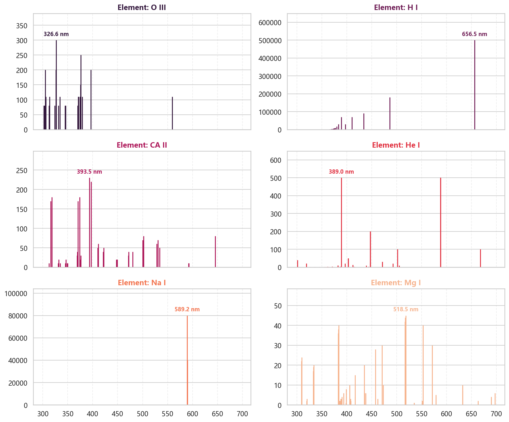

认识#
import numpy as np
import pandas as pd
import matplotlib.pyplot as plt
import seaborn as sns
from astroquery.nist import Nist
import astropy.units as u
from astropy.table import Table
from astropy.io import fits
from astroquery.mast import Observations
from cos_functions import estimate_snr
fonts = ['Microsoft YaHei', 'SimHei', 'SimSun', 'sans-serif']
plt.rcParams['font.sans-serif'] = fonts
sns.set_theme(style="whitegrid", font=fonts)
# 设置全局高清显示（放在代码最前面）
plt.rcParams['figure.dpi'] = 150 # 屏幕显示清晰度
plt.rcParams['savefig.dpi'] = 300 # 保存图片的清晰度
物质波长#
以氢原子为例， 我们可以看看在300到700nm波段中，他的一些波长
table = Nist.query(300 * u.nm, 1500 * u.nm, linename="H I")
observed实验室实际测得波长Ritz理论波长Rel.相对光强。波长概率
print(table.colnames)
['Observed', 'Ritz', 'Transition', 'Rel.', 'Aki', 'fik', 'Acc.', 'Ei Ek', 'Lower level', 'Upper level', 'gi gk', 'Type', 'TP', 'Line']
def get_element_data(element_name="H I"):
""" 获取物质的波长和光强. 300-700nm """
table = Nist.query(300 * u.nm, 700 * u.nm, linename=element_name)
df = table.to_pandas()
result_df = pd.DataFrame()
result_df['Wavelength'] = df['Observed'].fillna(df['Ritz'])
def clean_rel(val):
s = str(val).strip()
nums = "".join([c for c in s if c.isdigit() or c == '.'])
try:
return float(nums) if nums else 0.0
except:
return 0.0
result_df['Intensity'] = df['Rel.'].apply(clean_rel)
result_df['Element'] = element_name
return result_df
elements = ['O III', 'H I', 'CA II', 'He I', 'Na I', 'Mg I']
dfs = [get_element_data(ele) for ele in elements]
df = pd.concat(dfs)
colors = sns.color_palette("rocket", len(elements))
fig, axes = plt.subplots(3, 2, figsize=(12, 10), sharex=True)
axes_flat = axes.flatten()
for i, name in enumerate(elements):
ax = axes_flat[i]
subset = df[df['Element'] == name]
# 1. 绘制谱线
ax.vlines(subset['Wavelength'], 0, subset['Intensity'],
colors=colors[i], linewidth=1.5)
# 2. 找到最强峰值并标注 (Peak Picking)
if not subset.empty:
# 获取最强线的数据点
peak = subset.loc[subset['Intensity'].idxmax()]
peak_w = peak['Wavelength']
peak_i = peak['Intensity']
# 在峰值上方添加文字标注
ax.annotate(f'{peak_w:.1f} nm',
xy=(peak_w, peak_i),
xytext=(0, 5), # 向上偏移 5 个点
textcoords='offset points',
ha='center', # 水平居中
va='bottom', # 垂直底部对齐
fontsize=9,
fontweight='bold',
color=colors[i])
# 3. 样式设置
ax.set_title(f"Element: {name}", fontsize=12, color=colors[i], fontweight='bold')
ax.set_ylim(0, subset['Intensity'].max() * 1.3) # 增加高度比例(1.3)给文字留空间
ax.grid(axis='x', linestyle='--', alpha=0.3)
plt.tight_layout()
plt.show()

astroquery 库#
https://astroquery.readthedocs.io/en/latest/
从各种望远镜获取数据
获取一次任务，表示某个望远镜的一次曝光。
Observations.query_criteria(obs_id="LDM701020")
---------------------------------------------------------------------------
SSLError Traceback (most recent call last)
SSLError: [SSL: UNEXPECTED_EOF_WHILE_READING] EOF occurred in violation of protocol (_ssl.c:1007)
The above exception was the direct cause of the following exception:
MaxRetryError Traceback (most recent call last)
File c:\Users\63517\miniconda3\envs\data-analysis\lib\site-packages\requests\adapters.py:644, in HTTPAdapter.send(self, request, stream, timeout, verify, cert, proxies)
643 try:
--> 644 resp = conn.urlopen(
645 method=request.method,
646 url=url,
647 body=request.body,
648 headers=request.headers,
649 redirect=False,
650 assert_same_host=False,
651 preload_content=False,
652 decode_content=False,
653 retries=self.max_retries,
654 timeout=timeout,
655 chunked=chunked,
656 )
658 except (ProtocolError, OSError) as err:
File c:\Users\63517\miniconda3\envs\data-analysis\lib\site-packages\urllib3\connectionpool.py:841, in HTTPConnectionPool.urlopen(self, method, url, body, headers, retries, redirect, assert_same_host, timeout, pool_timeout, release_conn, chunked, body_pos, preload_content, decode_content, **response_kw)
839 new_e = ProtocolError("Connection aborted.", new_e)
--> 841 retries = retries.increment(
842 method, url, error=new_e, _pool=self, _stacktrace=sys.exc_info()[2]
843 )
844 retries.sleep()
File c:\Users\63517\miniconda3\envs\data-analysis\lib\site-packages\urllib3\util\retry.py:519, in Retry.increment(self, method, url, response, error, _pool, _stacktrace)
518 reason = error or ResponseError(cause)
--> 519 raise MaxRetryError(_pool, url, reason) from reason # type: ignore[arg-type]
521 log.debug("Incremented Retry for (url='%s'): %r", url, new_retry)
MaxRetryError: HTTPSConnectionPool(host='mast.stsci.edu', port=443): Max retries exceeded with url: /portal/Mashup/Mashup.asmx/columnsconfig (Caused by SSLError(SSLEOFError(8, '[SSL: UNEXPECTED_EOF_WHILE_READING] EOF occurred in violation of protocol (_ssl.c:1007)')))
During handling of the above exception, another exception occurred:
SSLError Traceback (most recent call last)
Cell In[7], line 1
----> 1 Observations.query_criteria(obs_id="LDM701020")
File c:\Users\63517\miniconda3\envs\data-analysis\lib\site-packages\astroquery\utils\class_or_instance.py:25, in class_or_instance.__get__.<locals>.f(*args, **kwds)
23 def f(*args, **kwds):
24 if obj is not None:
---> 25 return self.fn(obj, *args, **kwds)
26 else:
27 return self.fn(cls, *args, **kwds)
File c:\Users\63517\miniconda3\envs\data-analysis\lib\site-packages\astroquery\utils\process_asyncs.py:28, in async_to_sync.<locals>.create_method.<locals>.newmethod(self, *args, **kwargs)
24 @class_or_instance
25 def newmethod(self, *args, **kwargs):
26 verbose = kwargs.pop('verbose', False)
---> 28 response = getattr(self, async_method_name)(*args, **kwargs)
29 if kwargs.get('get_query_payload') or kwargs.get('field_help'):
30 return response
File c:\Users\63517\miniconda3\envs\data-analysis\lib\site-packages\astroquery\utils\class_or_instance.py:25, in class_or_instance.__get__.<locals>.f(*args, **kwds)
23 def f(*args, **kwds):
24 if obj is not None:
---> 25 return self.fn(obj, *args, **kwds)
26 else:
27 return self.fn(cls, *args, **kwds)
File c:\Users\63517\miniconda3\envs\data-analysis\lib\site-packages\astroquery\mast\observations.py:324, in ObservationsClass.query_criteria_async(self, pagesize, page, resolver, **criteria)
288 @class_or_instance
289 def query_criteria_async(self, *, pagesize=None, page=None, resolver=None, **criteria):
290 """
291 Given an set of criteria, returns a list of MAST observations.
292 Valid criteria are returned by ``get_metadata("observations")``
(...)
321 response : list of `~requests.Response`
322 """
--> 324 position, mashup_filters = self._parse_caom_criteria(resolver=resolver, **criteria)
326 if not mashup_filters:
327 raise InvalidQueryError("At least one non-positional criterion must be supplied.")
File c:\Users\63517\miniconda3\envs\data-analysis\lib\site-packages\astroquery\mast\observations.py:167, in ObservationsClass._parse_caom_criteria(self, resolver, **criteria)
163 coordinates = utils.parse_input_location(coordinates=coordinates,
164 objectname=objectname,
165 resolver=resolver)
166 else:
--> 167 mashup_filters = self._portal_api_connection.build_filter_set(self._caom_cone,
168 self._caom_filtered,
169 **criteria)
171 # handle position info (if any)
172 position = None
File c:\Users\63517\miniconda3\envs\data-analysis\lib\site-packages\astroquery\mast\discovery_portal.py:397, in PortalAPI.build_filter_set(self, column_config_name, service_name, **filters)
394 service_name = column_config_name
396 if not self._column_configs.get(service_name):
--> 397 self._get_col_config(service_name, fetch_name=column_config_name)
399 caom_col_config = self._column_configs[service_name]
401 mashup_filters = []
File c:\Users\63517\miniconda3\envs\data-analysis\lib\site-packages\astroquery\mast\discovery_portal.py:235, in PortalAPI._get_col_config(self, service, fetch_name)
229 fetch_name = service
231 headers = {"User-Agent": self._session.headers["User-Agent"],
232 "Content-type": "application/x-www-form-urlencoded",
233 "Accept": "text/plain"}
--> 235 response = self._request("POST", self.COLUMNS_CONFIG_URL,
236 data=("colConfigId="+fetch_name), headers=headers)
238 self._column_configs[service] = response[0].json()
240 more = False # for some catalogs this is not enough information
File c:\Users\63517\miniconda3\envs\data-analysis\lib\site-packages\astroquery\mast\discovery_portal.py:183, in PortalAPI._request(self, method, url, params, data, headers, files, stream, auth, retrieve_all)
180 status = "EXECUTING"
182 while status == "EXECUTING":
--> 183 response = super(PortalAPI, self)._request(method, url, params=params, data=data,
184 headers=headers, files=files, cache=False,
185 stream=stream, auth=auth)
187 if (time.time() - start_time) >= self.TIMEOUT:
188 raise TimeoutError("Timeout limit of {} exceeded.".format(self.TIMEOUT))
File c:\Users\63517\miniconda3\envs\data-analysis\lib\site-packages\astroquery\query.py:372, in BaseQuery._request(self, method, url, params, data, headers, files, save, savedir, timeout, cache, stream, auth, continuation, verify, allow_redirects, json, return_response_on_save)
370 if not cache:
371 with cache_conf.set_temp("cache_active", False):
--> 372 response = query.request(self._session, stream=stream,
373 auth=auth, verify=verify,
374 allow_redirects=allow_redirects,
375 json=json)
376 else:
377 response = query.from_cache(self.cache_location, cache_conf.cache_timeout)
File c:\Users\63517\miniconda3\envs\data-analysis\lib\site-packages\astroquery\query.py:77, in AstroQuery.request(self, session, cache_location, stream, auth, verify, allow_redirects, json)
74 def request(self, session, cache_location=None, stream=False,
75 auth=None, verify=True, allow_redirects=True,
76 json=None):
---> 77 return session.request(self.method, self.url, params=self.params,
78 data=self.data, headers=self.headers,
79 files=self.files, timeout=self.timeout,
80 stream=stream, auth=auth, verify=verify,
81 allow_redirects=allow_redirects,
82 json=json)
File c:\Users\63517\miniconda3\envs\data-analysis\lib\site-packages\requests\sessions.py:589, in Session.request(self, method, url, params, data, headers, cookies, files, auth, timeout, allow_redirects, proxies, hooks, stream, verify, cert, json)
584 send_kwargs = {
585 "timeout": timeout,
586 "allow_redirects": allow_redirects,
587 }
588 send_kwargs.update(settings)
--> 589 resp = self.send(prep, **send_kwargs)
591 return resp
File c:\Users\63517\miniconda3\envs\data-analysis\lib\site-packages\requests\sessions.py:703, in Session.send(self, request, **kwargs)
700 start = preferred_clock()
702 # Send the request
--> 703 r = adapter.send(request, **kwargs)
705 # Total elapsed time of the request (approximately)
706 elapsed = preferred_clock() - start
File c:\Users\63517\miniconda3\envs\data-analysis\lib\site-packages\requests\adapters.py:675, in HTTPAdapter.send(self, request, stream, timeout, verify, cert, proxies)
671 raise ProxyError(e, request=request)
673 if isinstance(e.reason, _SSLError):
674 # This branch is for urllib3 v1.22 and later.
--> 675 raise SSLError(e, request=request)
677 raise ConnectionError(e, request=request)
679 except ClosedPoolError as e:
SSLError: HTTPSConnectionPool(host='mast.stsci.edu', port=443): Max retries exceeded with url: /portal/Mashup/Mashup.asmx/columnsconfig (Caused by SSLError(SSLEOFError(8, '[SSL: UNEXPECTED_EOF_WHILE_READING] EOF occurred in violation of protocol (_ssl.c:1007)')))